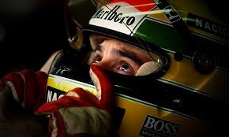
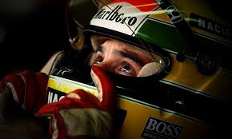

Biografia de Ayrton senna


 


"Ayrton Senna foi um piloto de Fórmula 1 das décadas de 1980 e 1990, e é considerado o maior ídolo brasileiro do automobilismo. Nasceu em São Paulo, no dia 21 de março de 1960, e morreu de maneira trágica em 1º de maio de 1994, após colidir com uma mureta de proteção no Grande Prêmio de San Marino, em Ímola. Seu velório foi um dos mais marcantes da história do Brasil, durou cerca de 22 horas e foi acompanhado por aproximadamente 240 mil pessoas."
Início de Ayrton Senna no kart A carreira de Senna no automobilismo começou como a da maioria dos pilotos: no kart. Aos quatro anos, Ayrton ganhou o seu primeiro kart, construído pelo pai. O motor foi tirado de um cortador de grama, mas chegava aos 60 km/h. O kart foi montado pelo pai foi o principal “brinquedo” de Ayrton na infância.
O acidente de Senna é um dos episódios mais tristes da história do esporte, mas sua morte foi responsável por uma revolução na segurança da Fórmula 1. Os carros ficaram muito mais seguros, e nenhum acidente fatal aconteceu por quase 20 anos. Em 2014, o francês Jules Bianchi se chocou com um trator que retirava o carro de outro piloto que havia batido segundos antes. Ele foi levado em coma para o hospital e acabou falecendo nove meses depois. Foi a única morte na F1 depois de Senna.. senna conquistou diversos títulos como, "Números e títulos de Ayrton Senna → Números e títulos de Ayrton Senna antes da Fórmula 1 Bicampeão paulista de Kart: 1974; 1976. Tricampeão brasileiro de Kart: 1978; 1979; 1980. Bicampeão sul-americano de Kart: 1977; 1980. Campeão de Fórmula Ford 1600: 1981. Campeão de Fórmula Ford 2000: 1982. Campeão de Fórmula 3 britânica: 1983. → Números e títulos de Ayrton Senna na Fórmula 1 Tricampeão: 1988; 1990; 1991. Vitórias: 41 Pódios: 80 Pole positions: 65 Voltas mais rápidas: 19,
"Ayrton Senna ganhou diversas homenagens ao redor do mundo. No circuito de Ímola, local do terrível acidente, há uma estátua em sua homenagem. Há também uma escultura do piloto no circuito de Donington Park, onde Senna fez a melhor primeira volta de todos os tempos. No dia 1º de maio de 2019, quando completou 25 anos de sua morte, foi realizado o 1º Senna Day, no Autódromo de Interlagos. O evento contou com atrações musicais, exposição de objetos e carros de Ayrton, corridas de kart e atividades infantis."
LIVRO
Ayrton senna, uma lenda a toda velocidade, uma jornada interativa
INSTITUTO AYRTON SENNA
Ao lado da paixão pela velocidade, o tricampeão brasileiro de Fórmula 1, Ayrton Senna, tinha paixão pelo Brasil, e sonhava com um país onde todos tivessem a oportunidade de serem vitoriosos no que quisessem. Após o acidente ocorrido em maio de 1994, em Ímola, na Itália, o desejo do piloto se juntou à vontade de Viviane Senna, sua irmã, e que, junto da família Senna, decidiu levar o sonho adiante, fundando a organização em novembro do mesmo ano.